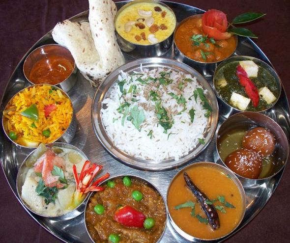
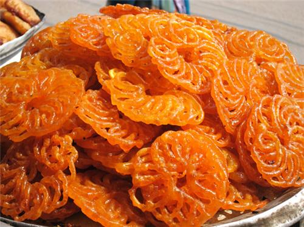
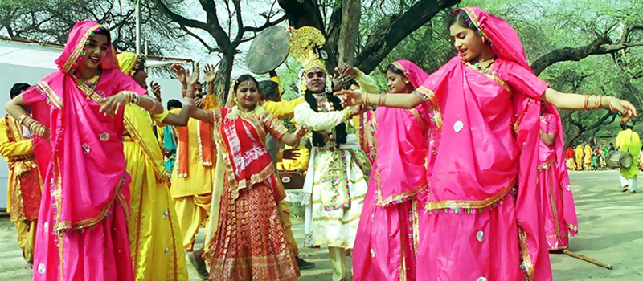
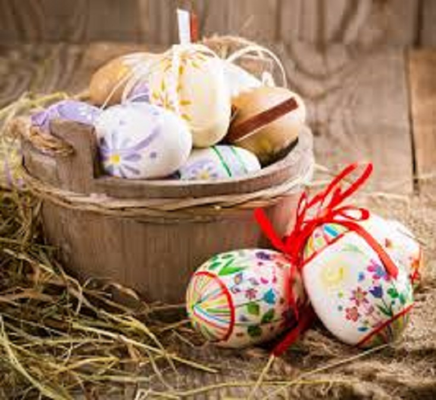
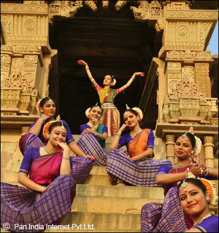
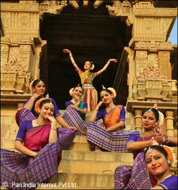

Madhya Pradesh
- Home
- Food
 
- Fashion

- Festival
- Khajuraho Dance
- Easter Festival

Easter Festival
Madhya Pradesh boasts of a list of various fairs and festivals that includes all the chief events. Besides observing various rituals of these festivals and fairs, people can also have a peep into the tradition and culture of this place. Amongst the Fairs and Festivals in Madhya Pradesh, Easter is one of the major occasions that draws a lot of people.
 

Khajuraho Dance
The Khajuraho Dance Festival is the celebration of the traditional dance forms against the backdrop of the UNESCO World Heritage Sites. The cultural presentation is an intriguing spectacle of art and traditions of India presented in the form of dance. The site being testimony to India culture and traditions is ideal to present the classical forms of dance. As the winters pass to make for spring, the Dance Festival is organized. Spectators from all over the world attend the demonstration of art in the dance form. - Easter Festival
- Khajuraho Dance